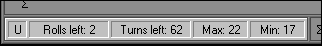

| |||
| Status Bar is located at the bottom left of the winYAMB window and contains few text boxes which provides some useful information. Some of these fields are not always available, but when they are, they look preety same like on the following image.  First box from the left provides Undo function status. If it contains a capital "U" then Undo option is available for use. If it is empty Undo option is disabled. Next two boxes applies to the number of Rolls left in the turn and number of Turns left in the current game. Max and Min boxes provides quick maximum and minimum sum of rolled dices which are crucial for fields of type Maximum and Minimum (click here for the more on field types). | |||
| δ [dUcA] 2oo3. | |||